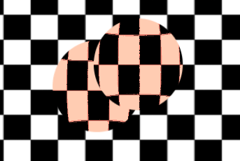

Screen-reading shaders
Introduction
It is often desired to make a shader that reads from the same screen to which it's writing. 3D APIs, such as OpenGL or DirectX, make this very difficult because of internal hardware limitations. GPUs are extremely parallel, so reading and writing causes all sorts of cache and coherency problems. As a result, not even the most modern hardware supports this properly.
The workaround is to make a copy of the screen, or a part of the screen, to a back-buffer and then read from it while drawing. Godot provides a few tools that make this process easy.
Screen texture
Godot Shading language has a special texture to access the already
rendered contents of the screen. It is used by specifying a hint when declaring
a sampler2D uniform: hint_screen_texture. A special built-in varying
SCREEN_UV can be used to obtain the UV relative to the screen for the current
fragment. As a result, this canvas_item fragment shader results in an invisible
object, because it only shows what lies behind:
shader_type canvas_item;
uniform sampler2D screen_texture : hint_screen_texture, repeat_disable, filter_nearest;
void fragment() {
COLOR = textureLod(screen_texture, SCREEN_UV, 0.0);
}
textureLod is used here as we only want to read from the bottom mipmap. If
you want to read from a blurred version of the texture instead, you can increase
the third argument to textureLod and change the hint filter_nearest to
filter_nearest_mipmap (or any other filter with mipmaps enabled). If using a
filter with mipmaps, Godot will automatically calculate the blurred texture for
you.
Warning
If the filter mode is not changed to a filter mode that contains mipmap in its name,
textureLod with an LOD parameter greater than 0.0 will have the same appearance
as with the 0.0 LOD parameter.
Screen texture example
The screen texture can be used for many things. There is a special demo for Screen Space Shaders, that you can download to see and learn. One example is a simple shader to adjust brightness, contrast and saturation:
shader_type canvas_item;
uniform sampler2D screen_texture : hint_screen_texture, repeat_disable, filter_nearest;
uniform float brightness = 1.0;
uniform float contrast = 1.0;
uniform float saturation = 1.0;
void fragment() {
vec3 c = textureLod(screen_texture, SCREEN_UV, 0.0).rgb;
c.rgb = mix(vec3(0.0), c.rgb, brightness);
c.rgb = mix(vec3(0.5), c.rgb, contrast);
c.rgb = mix(vec3(dot(vec3(1.0), c.rgb) * 0.33333), c.rgb, saturation);
COLOR.rgb = c;
}
Behind the scenes
While this seems magical, it's not. In 2D, when hint_screen_texture is first
found in a node that is about to be drawn, Godot does a full-screen copy to a
back-buffer. Subsequent nodes that use it in shaders will not have the screen
copied for them, because this ends up being inefficient. In 3D, the screen is
copied after the opaque geometry pass, but before the transparent geometry pass,
so transparent objects will not be captured in the screen texture.
As a result, in 2D, if shaders that use hint_screen_texture overlap, the
second one will not use the result of the first one, resulting in unexpected
visuals:

In the above image, the second sphere (top right) is using the same source for the screen texture as the first one below, so the first one "disappears", or is not visible.
In 2D, this can be corrected via the BackBufferCopy node, which can be instantiated between both spheres. BackBufferCopy can work by either specifying a screen region or the whole screen:

With correct back-buffer copying, the two spheres blend correctly:

Warning
In 3D, materials that use hint_screen_texture are considered transparent themselves and
will not appear in the resulting screen texture of other materials.
If you plan to instance a scene that uses a material with hint_screen_texture,
you will need to use a BackBufferCopy node.
In 3D, there is less flexibility to solve this particular issue because the screen texture is only captured once. Be careful when using the screen texture in 3D as it won't capture transparent objects and may capture some opaque objects that are in front of the object using the screen texture.
You can reproduce the back-buffer logic in 3D by creating a Viewport with a camera in the same position as your object, and then use the Viewport's texture instead of the screen texture.
Back-buffer logic
So, to make it clearer, here's how the backbuffer copying logic works in 2D in Godot:
If a node uses
hint_screen_texture, the entire screen is copied to the back buffer before drawing that node. This only happens the first time; subsequent nodes do not trigger this.If a BackBufferCopy node was processed before the situation in the point above (even if
hint_screen_texturewas not used), the behavior described in the point above does not happen. In other words, automatic copying of the entire screen only happens ifhint_screen_textureis used in a node for the first time and no BackBufferCopy node (not disabled) was found before in tree-order.BackBufferCopy can copy either the entire screen or a region. If set to only a region (not the whole screen) and your shader uses pixels not in the region copied, the result of that read is undefined (most likely garbage from previous frames). In other words, it's possible to use BackBufferCopy to copy back a region of the screen and then read the screen texture from a different region. Avoid this behavior!
Depth texture
For 3D shaders, it's also possible to access the screen depth buffer. For this,
the hint_depth_texture hint is used. This texture is not linear; it must be
converted using the inverse projection matrix.
The following code retrieves the 3D position below the pixel being drawn:
uniform sampler2D depth_texture : hint_depth_texture, repeat_disable, filter_nearest;
void fragment() {
float depth = textureLod(depth_texture, SCREEN_UV, 0.0).r;
vec4 upos = INV_PROJECTION_MATRIX * vec4(SCREEN_UV * 2.0 - 1.0, depth, 1.0);
vec3 pixel_position = upos.xyz / upos.w;
}
Normal-roughness texture
Note
Normal-roughness texture is only supported in the Forward+ rendering method, not Mobile or Compatibility.
Similarly, the normal-roughness texture can be used to read the normals and
roughness of objects rendered in the depth prepass. The normal is stored in the
.xyz channels (mapped to the 0-1 range) while the roughness is stored in the
.w channel.
uniform sampler2D normal_roughness_texture : hint_normal_roughness_texture, repeat_disable, filter_nearest;
void fragment() {
float screen_roughness = texture(normal_roughness_texture, SCREEN_UV).w;
vec3 screen_normal = texture(normal_roughness_texture, SCREEN_UV).xyz;
screen_normal = screen_normal * 2.0 - 1.0;
Redefining screen textures
The screen texture hints (hint_screen_texture, hint_depth_texture, and
hint_normal_roughness_texture) can be used with multiple uniforms. For
example, you may want to read from the texture multiple times with a different
repeat flag or filter flag.
The following example shows a shader that reads the screen space normal with linear filtering, but reads the screen space roughness using nearest neighbor filtering.
uniform sampler2D normal_roughness_texture : hint_normal_roughness_texture, repeat_disable, filter_nearest;
uniform sampler2D normal_roughness_texture2 : hint_normal_roughness_texture, repeat_enable, filter_linear;
void fragment() {
float screen_roughness = texture(normal_roughness_texture, SCREEN_UV).w;
vec3 screen_normal = texture(normal_roughness_texture2, SCREEN_UV).xyz;
screen_normal = screen_normal * 2.0 - 1.0;